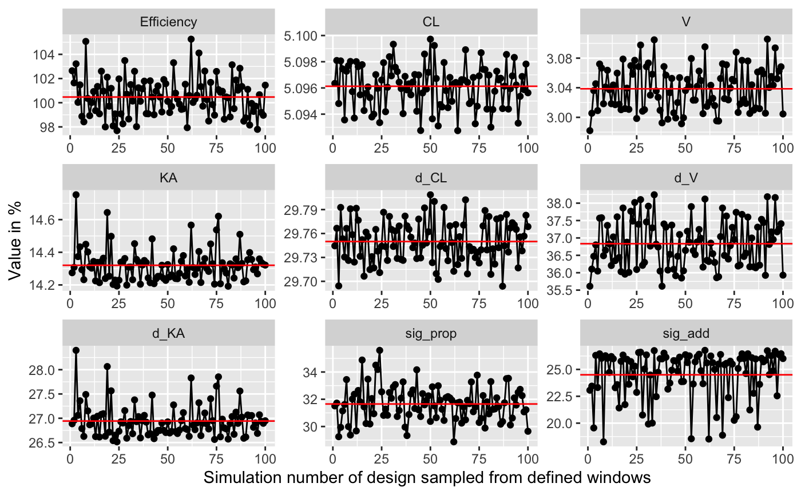

plot_efficiency_of_windows.RdFunction plots the efficiency of windows around the optimal design points.
The function samples from a uniform distribution around the optimal design
points for each group (or each individual with deviate_by_id=TRUE,
with slower calculation times) and compares the results with the optimal
design. The maximal and minimal allowed values for all design variables as
defined in poped.db are respected (e.g. poped.db$design_space$minxt and
poped.db$design_space$maxxt).
plot_efficiency_of_windows(poped.db, xt_windows = NULL, xt_plus = xt_windows, xt_minus = xt_windows, iNumSimulations = 100, y_eff = TRUE, y_rse = TRUE, ofv_calc_type = poped.db$settings$ofv_calc_type, mean_line = TRUE, mean_color = "red", deviate_by_id = FALSE, ...)
| poped.db | A poped database |
|---|---|
| xt_windows | The distance on one direction from the optimal sample
times. Can be a number or a matrix of the same size as the xt matrix found
in |
| xt_plus | The upper distance from the optimal sample times (xt +
xt_plus). Can be a number or a matrix of the same size as the xt matrix
found in |
| xt_minus | The lower distance from the optimal sample times (xt -
xt_minus). Can be a number or a matrix of the same size as the xt matrix
found in |
| iNumSimulations | The number of design simulations to make within the specified windows. |
| y_eff | Should one of the plots created have efficiency on the y-axis? |
| y_rse | Should created plots include the relative standard error of each parameter as a value on the y-axis? |
| ofv_calc_type | OFV calculation type for FIM
|
| mean_line | Should a mean value line be created? |
| mean_color | The color of the mean value line. |
| deviate_by_id | Should the computations look at deviations per individual instead of per group? |
| ... | Extra arguments passed to |
A ggplot object.
Other evaluate_design: evaluate.fim,
evaluate_design,
evaluate_power, get_rse,
model_prediction,
plot_model_prediction
Other Simulation: model_prediction,
plot_model_prediction
Other Graphics: plot_model_prediction
library(PopED) ############# START ################# ## Create PopED database ## (warfarin example) ##################################### ## Warfarin example from software comparison in: ## Nyberg et al., "Methods and software tools for design evaluation ## for population pharmacokinetics-pharmacodynamics studies", ## Br. J. Clin. Pharm., 2014. ## find the parameters that are needed to define from the structural model ff.PK.1.comp.oral.sd.CL#> function(model_switch,xt,parameters,poped.db){ #> ##-- Model: One comp first order absorption #> with(as.list(parameters),{ #> y=xt #> y=(DOSE*Favail*KA/(V*(KA-CL/V)))*(exp(-CL/V*xt)-exp(-KA*xt)) #> return(list( y= y,poped.db=poped.db)) #> }) #> } #> <environment: namespace:PopED>## -- parameter definition function ## -- names match parameters in function ff sfg <- function(x,a,bpop,b,bocc){ parameters=c(CL=bpop[1]*exp(b[1]), V=bpop[2]*exp(b[2]), KA=bpop[3]*exp(b[3]), Favail=bpop[4], DOSE=a[1]) return(parameters) } ## -- Define initial design and design space poped.db <- create.poped.database(ff_fun=ff.PK.1.comp.oral.sd.CL, fg_fun=sfg, fError_fun=feps.prop, bpop=c(CL=0.15, V=8, KA=1.0, Favail=1), notfixed_bpop=c(1,1,1,0), d=c(CL=0.07, V=0.02, KA=0.6), sigma=0.01, groupsize=32, xt=c( 0.5,1,2,6,24,36,72,120), minxt=0, maxxt=120, a=70) ############# END ################### ## Create PopED database ## (warfarin example) ##################################### # Examine efficiency of sampling windows plot_efficiency_of_windows(poped.db,xt_windows=0.5)# NOT RUN { plot_efficiency_of_windows(poped.db, xt_plus=c( 0.5,1,2,1,2,3,7,1), xt_minus=c( 0.1,2,5,4,2,3,6,2)) plot_efficiency_of_windows(poped.db,xt_windows=c( 0.5,1,2,1,2,3,7,1)) plot_efficiency_of_windows(poped.db, xt_plus=c( 0.5,1,2,1,2,3,7,1), xt_minus=c( 0.1,2,5,4,2,3,6,2), y_rse=FALSE) plot_efficiency_of_windows(poped.db, xt_plus=c( 0.5,1,2,1,2,3,7,1), xt_minus=c( 0.1,2,5,4,2,3,6,2), y_eff=FALSE) # }